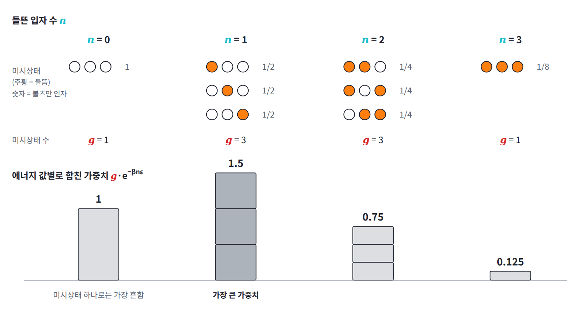
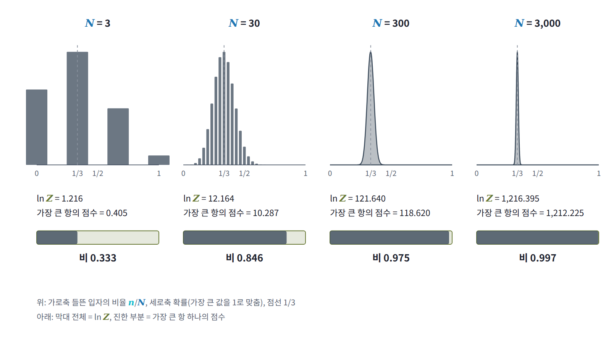

8장 — 분배함수와 자유에너지
이 장의 물음
VAE(변분 자기부호화기)를 한 번이라도 학습해 본 사람은 그 손실 함수가 두 항으로 되어 있다는 것을 안다. 디코더가 입력을 얼마나 잘 되살리는지 재는 재구성 항과, 인코더가 내놓은 잠재변수의 분포가 사전분포 N(0, I)에서 얼마나 멀어졌는지 재는 KL 항이다. 이 둘의 합에 마이너스를 붙인 양을 ELBO(evidence lower bound)라 부르고, 교과서는 이것이 데이터의 로그우도 ln p(x)의 하한이라고 가르친다. 그런데 왜 하필 이 두 항일까? 하한과 참값 사이의 틈은 무엇이고, KL 항 앞에 계수 β를 붙이는 β-VAE는 대체 무엇을 조절하는 걸까?
이 물음에 답하려면 조금 멀리 돌아가야 한다. 이 장은 다음 물음들에 차례로 답하면서 VAE의 손실로 돌아온다.
- 볼츠만 분포에서 상태 하나는 에너지가 낮을수록 흔한데, 실제로 관찰되는 에너지는 왜 가장 낮은 에너지가 아닐까?
- 우리가 정규화 상수라며 나눠 버리던 합 Z의 로그는 그 관찰되는 에너지에 대해 무엇을 알고 있을까?
- 볼츠만 분포가 아닌 분포, 이를테면 인코더가 내놓는 분포에도 같은 잣대를 댈 수 있을까?
- 고차원 가우시안에서 뽑은 샘플의 에너지 ‖x‖²/2는 왜 확률밀도가 가장 높은 원점이 아니라 d/2 근처에 모일까?
- 분류기가 매번 계산하고 버리던 logsumexp는 입력에 대해 무엇을 말해 줄까?
에너지와 엔트로피의 겨루기: 관찰되는 에너지는 바닥이 아니다
볼츠만 분포에서 미시상태 하나의 확률은 e^(−βE)에 비례하므로, 에너지가 낮은 상태일수록 흔하다. 그렇다면 열원과 맞닿은 계를 들여다보면 늘 가장 낮은 에너지가 관찰될까? 두 상태만 가질 수 있는 입자 몇 개로 직접 세어 보자.
2준위 입자 세 개와 서른 개
에너지 0인 바닥 상태와 에너지 ε인 들뜬 상태, 이렇게 두 상태만 가질 수 있는 입자 N개가 온도 T인 열원과 맞닿아 있다고 하자. 입자끼리는 에너지를 주고받지 않는다. 계산을 쉽게 하려고 βε = ln 2인 온도, 곧 들뜬 상태의 볼츠만 인자 e^(−βε)가 정확히 1/2인 온도를 고른다.
입자가 세 개이면 미시상태는 2³ = 8개다. 미시상태 하나하나로 보면 모두 바닥 상태인 미시상태의 볼츠만 인자가 1로 가장 크고, 입자 하나가 들뜬 미시상태는 1/2로 그 절반이다. 그런데 입자 하나가 들뜬 미시상태는 세 개이므로, 에너지가 ε인 쪽의 비중은 합쳐서 3 × 1/2 = 1.5가 되어 바닥 상태의 1을 이긴다. 에너지 값별로 정리하면 다음과 같다.
| 들뜬 입자 수 n | 미시상태 수 g | 볼츠만 인자 e^(−βnε) | 비중 g·e^(−βnε) | 점수 ln g − βnε |
|---|---|---|---|---|
| 0 | 1 | 1 | 1 | 0 |
| 1 | 3 | 0.5 | 1.5 | 0.405 |
| 2 | 3 | 0.25 | 0.75 | −0.288 |
| 3 | 1 | 0.125 | 0.125 | −2.079 |
마지막 칸은 비중의 로그다. 로그를 취하면 곱이 합으로 바뀌어서, 에너지 값마다 경우의 수가 주는 점수 ln g와 에너지가 매기는 벌점 βnε가 따로 보인다. 에너지를 올리면 벌점이 늘지만 그만큼 상태의 수도 늘어 점수를 벌어 온다. 이 차이를 앞으로 에너지 값의 「점수」라 부르자. 점수가 가장 큰 에너지 값이 가장 자주 관찰되며, 여기서는 n = 1이다.

입자를 30개로 늘려 같은 계산을 하면 다음 표를 얻는다. 입자들이 서로 독립이라 분배함수는 입자 하나의 분배함수를 거듭제곱한 Z = (1 + e^(−βε))^N = 1.5^N이고, 마지막 칸의 확률은 비중을 이 Z로 나눈 것이다.
| n | ln g | −βnε | 점수 | 확률 |
|---|---|---|---|---|
| 0 | 0 | 0 | 0 | 0.0000 |
| 5 | 11.867 | −3.466 | 8.401 | 0.0232 |
| 9 | 16.476 | −6.238 | 10.238 | 0.1457 |
| 10 | 17.218 | −6.931 | 10.287 | 0.1530 |
| 11 | 17.816 | −7.625 | 10.191 | 0.1391 |
| 15 | 18.860 | −10.397 | 8.462 | 0.0247 |
| 20 | 17.218 | −13.863 | 3.355 | 0.0001 |
| 30 | 0 | −20.794 | −20.794 | 0.0000 |
에너지만 보면 n = 0이 가장 좋고, 경우의 수만 보면 절반이 들뜬 n = 15가 가장 좋다. 실제 승자는 그 사이의 n = 10, 곧 입자의 3분의 1이 들뜬 상태다. 입자 하나가 들떠 있을 확률이 1/(1 + e^(βε)) = 1/3이었으니 당연한 결과이기도 하다.
점수를 물리의 말로
점수를 물리의 말로 옮겨 보자. 경우의 수의 로그에 볼츠만 상수를 곱한 것이 엔트로피 S(E) = k ln g(E)이므로, 점수에 −kT를 곱하면 E − TS(E)가 된다. 그러니 점수가 가장 큰 에너지는 E − TS(E)가 가장 작은 에너지다.
E − TS는 에너지와 엔트로피의 겨루기를 한 줄로 적은 것이다. 에너지 항은 계를 바닥 상태 쪽으로 끌어내리고, −TS 항은 상태가 많은 쪽으로 끌어당기며, 온도 T가 엔트로피 1 단위를 에너지 몇 단위로 쳐 줄지 정하는 환율 노릇을 한다. 온도가 낮으면 환율이 낮아 에너지 항이 이기므로 계는 바닥 상태 근처에 머물고, 온도가 높으면 엔트로피 항이 이겨 가장 상태가 많은 에너지, 2준위 입자라면 절반이 들뜬 곳으로 간다. 미시상태 하나하나로 보면 늘 바닥 상태가 가장 흔한데도 관찰되는 에너지는 온도에 따라 옮겨 가는 이유가 여기 있다.
승자의 위치는 E − TS(E)를 E로 미분해 0으로 놓으면 나온다. 그러면 dS/dE = 1/T, 곧 「계 자신의 온도가 열원의 온도와 같아지는 에너지」가 승자다. 이 최소화에는 더 직접적인 뜻도 있다. 계가 에너지 E를 가지면 열원은 그만큼을 내준 것이므로 열원의 엔트로피는 E/T만큼 줄어 있다. 따라서 계와 열원을 합친 전체 엔트로피는 S(E) − E/T + (상수)이고, 여기에 −T를 곱한 것이 E − TS(E)다. E − TS를 가장 작게 하는 것은 계와 열원을 합친 전체의 경우의 수를 가장 크게 하는 것과 같은 일이다. 새로운 원리가 생긴 것이 아니라, 에너지를 주고받는 두 계는 전체 경우의 수가 가장 큰 나눠 갖기에서 멈춘다는 원리를 열원의 몫까지 계산에 넣어 계 쪽의 말로만 다시 쓴 것이다.
입자 수를 늘리면: 가장 큰 항
지금까지는 에너지 값마다 점수를 매겨 승자 하나를 찾았다. 그런데 분배함수 Z는 승자 하나가 아니라 에너지 값마다의 비중을 모두 더한 것이다. 승자 하나는 그 합에서 얼마나 큰 몫을 차지할까? 이번에는 모든 항을 더한 ln Z와 가장 큰 항 하나의 점수를 나란히 놓고 입자 수를 늘려 보자.
| N | ln Z | 승자 n | 최대 점수 | 차이 | 최대 점수 / ln Z |
|---|---|---|---|---|---|
| 3 | 1.216 | 1 | 0.405 | 0.811 | 0.333 |
| 30 | 12.164 | 10 | 10.287 | 1.877 | 0.846 |
| 300 | 121.640 | 100 | 118.620 | 3.020 | 0.975 |
| 3000 | 1216.395 | 1000 | 1212.225 | 4.170 | 0.997 |
입자가 세 개일 때는 가장 큰 항이 ln Z의 3분의 1밖에 설명하지 못하지만, 입자가 3,000개이면 99.7%를 설명한다. 차이도 조금씩 자라기는 하지만, ln Z가 입자 수에 비례해 10배씩 커지는 동안 차이는 1.1 남짓씩만 늘어난다. Z는 N + 1개의 항을 모두 더한 것인데, 입자가 많아지면 왜 그 로그가 가장 큰 항 하나로 거의 정해질까?

합의 로그와 가장 큰 항
분배함수를 에너지 값별로 묶어 쓰면 Z = Σ_E g(E)e^(−βE)이고, 각 항을 지수 하나로 모으면 Z = Σ_E e^(ln g(E) − βE)가 된다. 괄호 안이 바로 앞에서 매긴 점수다. 그러니 ln Z는 점수들의 logsumexp이고, ML을 해 본 독자라면 logsumexp가 max를 부드럽게 만든 함수라는 것을 알고 있을 것이다. 이 사실을 부등식으로 적어 두자. 더하는 항은 모두 양수이므로 합은 가장 큰 항보다 크고, 항이 M개이면 합은 가장 큰 항의 M배를 넘지 못한다.
2준위 입자 N개에서는 에너지 값이 N + 1개뿐이므로, ln Z와 최대 점수의 차이는 ln(N + 1)을 넘지 못한다. 반면 점수 자체는 입자 수에 비례해 커진다. N = 3,000이면 차이의 상한은 ln 3001 = 8.0이고 실제 차이는 4.17인데, ln Z는 1,216이다. 입자 수가 아보가드로수쯤 되면 ln Z는 10²³의 크기이고 차이는 기껏해야 수십이므로, 둘을 구별할 방법이 없다. 실제 차이가 상한의 절반쯤인 것은 승자 근처의 항들이 승자와 거의 같은 크기로 함께 더해지기 때문인데, 그 차이가 정확히 무엇을 재는지는 ln Z의 기울기를 다룰 때 코드로 확인한다.
점수에 −kT를 곱하면 E − TS(E)였으므로, 이 결과를 물리의 말로 옮기면 다음과 같다. 큰 계에서 −kT ln Z는 겨루기의 승자가 거둔 E − TS와 거의 같다.
ML에서: logsumexp는 부드러운 max다
분류기의 로짓에 쓰는 logsumexp도 같은 부등식을 따른다. 클래스가 1,000개이면 logsumexp는 가장 큰 로짓보다 크고, 가장 큰 로짓에 ln 1000 = 6.9를 더한 값보다 작다. 라이브러리가 logsumexp를 계산하는 방식도 이 부등식을 그대로 따른다. 로짓이 89만 넘어도 float32에서 e^z가 넘쳐 버리므로, 가장 큰 로짓 m을 먼저 빼고 m + ln Σᵢe^(zᵢ − m)으로 계산한다. 앞의 m이 가장 큰 항이고, 뒤의 로그는 0과 ln(클래스 수) 사이에서 나머지 항들이 보태는 몫이다.